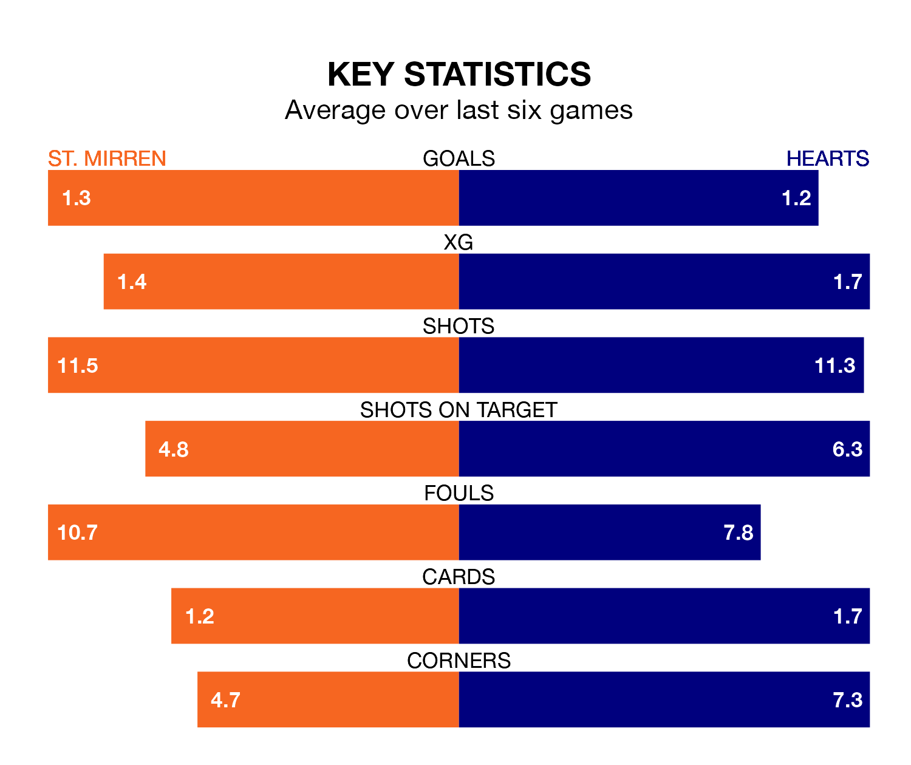

Hearts travel to St. Mirren on Saturday in the Premiership.
The visitors come into the game on the back of a draw in their last match, having tied with Kilmarnock 1-1 at home, with a goal from Kenneth Vargas.
The Buddies also drew their last match, 1-1 against Motherwell, with their goal scored by Marcus Fraser.
In Lawrence Shankland, Hearts have the league's sharpest shooter so far this season. He has notched 20 goals in 31 appearances.
His goal rate of one every 139 minutes is quicker than that of Mikael Mandron, St. Mirren's top scorer with a goal every 227 minutes, and a total of seven goals in 28 games.
In the last 10 years, St. Mirren and Hearts have played each other on 17 occasions. St. Mirren won four of them, Hearts eight, and they drew five times.
On average, the Buddies scored 1.0 goal and Hearts 1.6 in those matches.
Their last meeting was on December 23, when Hearts won 2-0 at home.
The away side are third in the table after 31 games, of which they have won 17 and drawn five, earning 56 points.
The Buddies are two places behind Hearts in fifth, with 12 wins and seven draws putting them on 43 points.
With 37 goals in 31 games so far this season, the hosts are scoring at below the league average rate with 1.2 goals per game. But they are conceding fewer than average too, letting in 38 goals at a rate of 1.2 per game.
Hearts, meanwhile, are average scorers, with 1.3 goals per game. They have conceded 1.0 goal per game.
St. Mirren are in mixed form in the Premiership, with two wins and two draws from their last six games.
And also with two wins and two draws over that period, the visitors' form is identical – they have both taken eight points from 18.
Saturday's match will be refereed by Alan James Muir, who has taken charge of nine Premiership games so far this season, issuing one red card and booking 31 players. He has awarded two penalties.
The last Hearts game Muir refereed was the 2-2 draw at home against Ross County on December 30. He is yet to oversee a match featuring St. Mirren this season.
Updated: 16:41 (UTC), 04/04/24